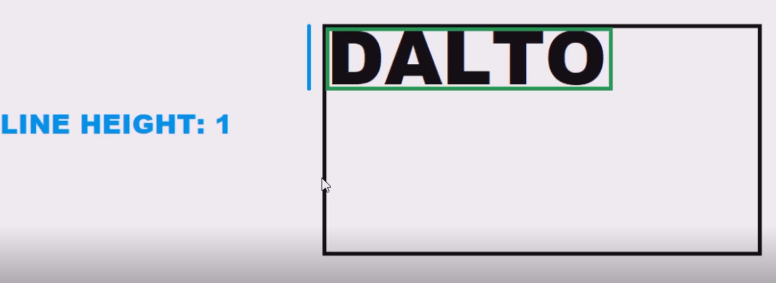
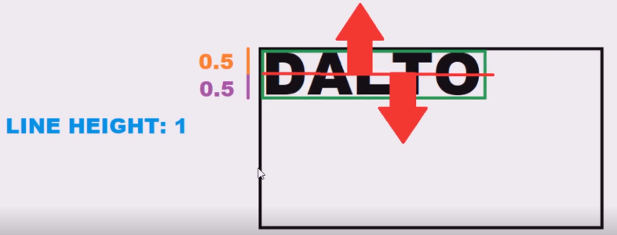
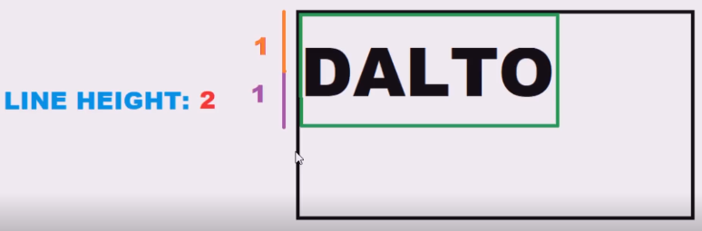

Esta propiedad define la altura de la línea del texto, para funcionar toma como base las dimensiones de texto actual, el concepto del funcionamiento de su medida es el siguiente.
Por defecto el valor de esta propiedad es de 1, lo que resulta en que las dimensiones de la línea sean iguales al espacio ocupado por el texto.

Esta medida toma como punto de origen la mitad del texto, distribuyendo la mitad de sus dimensiones hacia arriba y hacia abajo de la siguiente forma:

Por lo tanto sea cual sea el valor asignado a esta propiedad la mitad de este define la distancia del extremo superior de la línea respecto al centro del texto, mientras que la otra mitad hace lo propio con el extremo inferior.
La altura de la línea puede ser modificada para ocupar un espacio mayor al ocupado por el texto de la siguiente forma:

De esta forma se puede generar separación entre las diferentes líneas de un texto, creando estilos más entendibles y amigables para la vista,
Nota: A "line-height" se le puede asignar cualquier valor, incluyendo décimas, simplemente se utilizaron valores enteros para el ejemplo para facilitar la explicación, lo importante es entender que sea cual sea el valor aplicado este se dividirá en dos, cada mitad de este se asignará a los segmentos superior e inferior de la línea.